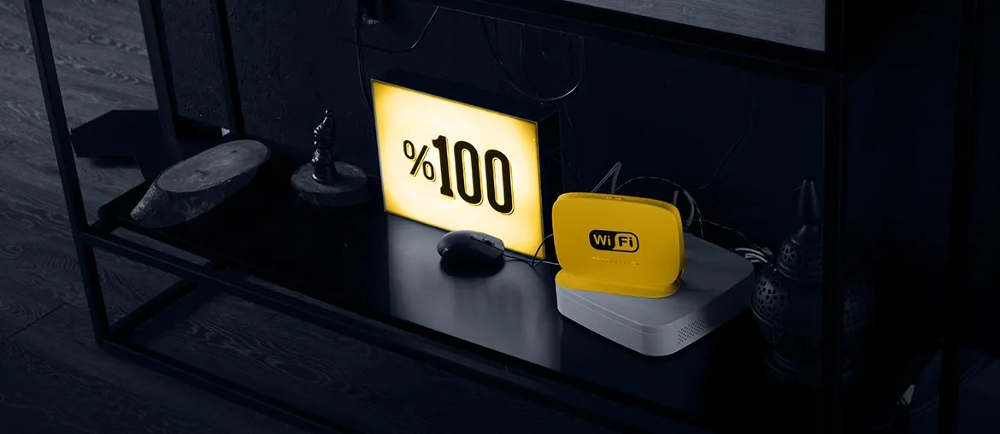

Map the report flow
Trace simulation output, customer report types, data stores, and weak handoffs before changing the platform.
Saw the Platform engineer role tied to Aaru's simulation work. Here is how we would help turn raw model results into stable reports faster.
Aaru is moving from strong simulation science to repeatable customer delivery. The hiring signal points to one hard job: turning simulation output into clear reports, data pages, and decision-ready summaries. If that layer is slow, pilots wait and trust can drop. The need is not more demo polish. It is senior platform capacity that can ship beside the core team.
Stack fit: Python, Java, Node.js, React, PostgreSQL, Kubernetes.
Trace simulation output, customer report types, data stores, and weak handoffs before changing the platform.
Create backend services that make new executive summaries and result pages easier to add.
Add automated checks for data quality, report rendering, deployment health, and customer-specific formats.
Run a six-week pilot with working releases, clear handover notes, and backlog choices each week.
Elinext is a full-cycle software development company, active since 1997, with about 700 in-house specialists and no freelancers. We build web, backend, mobile, DevOps, QA, and AI/ML systems for teams in the US, Europe, and other regions. Our work is backed by ISO 9001 and ISO 27001 practices. Relevant customers include:
For this plan, Elinext would act as a senior squad beside your team, focused on platform delivery and reporting reliability. The same team shape fits because backend, QA, and DevOps must move together.

Elinext built and improved a high-load web platform with Java, Python, React, Kubernetes, and cloud services.
Read case studyElinext connected an AI assistant with user data using FastAPI, React, Python, TypeScript, and AI tooling.
Read case studyWe can scope the pilot in one short call.
Contact Elinext